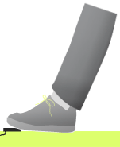

Foot Tapping Test
This test will measure how quickly you tap your foot on the pedal. You will repeat this action over and over as fast as you can until you are instructed to stop. Be sure to pivot your foot from the heel.